Sesión 4.1: Requerimiento hídrico y evapotranspiración
Zona central, cultivo en plena floración, día despejado. Un camión aljibe carga 10 000 L.
Piénsalo 30 segundos y anota tu apuesta.
≈ 7 camiones aljibe (~70 000 L) por hectárea, cada día
Eso equivale a una lámina de 7 mm/día. Casi toda esa agua vuelve a la atmósfera como vapor.
¿De dónde sale ese número y qué lo controla? Esa es la pregunta de hoy.
Unidad 3 — Ideas fuerza:
- El agua sube por el xilema tirada por la transpiración (cohesión-tensión)
- Más del 90% del agua sale por los estomas
- La transpiración depende de la demanda atmosférica (radiación, DPV, viento) y del control estomático (\(g_s\))
- Para fijar CO₂ la planta debe perder agua (WUE)
Ahora: pasamos de la hoja al cultivo. ¿Cuánta agua pierde una hectárea completa, sumando plantas y suelo?
| Unidad | 4 — Requerimiento hídrico de los cultivos |
| Sesión | 4.1 |
| RAA | RAA6 |
| Duración | ~90 minutos |
| Contenido | Requerimiento hídrico, evapotranspiración (E + T), factores que controlan la ET, balance de energía \(R_n = G + H + \lambda E\) |
Al finalizar esta sesión, serás capaz de:
En la Unidad 3 medimos el agua en la hoja (mmol m⁻² s⁻¹). Para regar necesitamos el agua del cultivo completo (mm/día).
| Escala | Qué medimos | Unidad típica | Instrumento |
|---|---|---|---|
| Hoja | Transpiración (\(E\)) | mmol H₂O m⁻² s⁻¹ | Porómetro, IRGA |
| Planta | Flujo de savia | L/planta/día | Sensor de flujo de savia |
| Cultivo | Evapotranspiración (ET) | mm/día | Estación meteorológica, lisímetro |
El agricultor no riega hojas: riega hectáreas. Por eso trabajamos en mm/día.
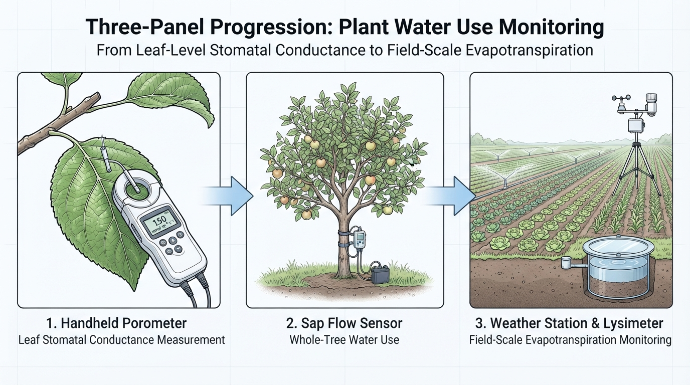
El requerimiento hídrico de un cultivo es la cantidad de agua que necesita para compensar lo que pierde por evapotranspiración y así crecer y producir sin restricción.
\[ \text{Requerimiento hídrico} \approx ET_c \]
. . .
Ojo: requerimiento hídrico ≠ necesidad de riego. Parte del requerimiento lo cubre la lluvia o el agua guardada en el suelo. La necesidad de riego es lo que falta (lo veremos en la U5).
Una lámina de 1 mm es el agua que cubriría una superficie plana con 1 mm de altura.
\[ 1 \text{ mm} = 1 \text{ L/m}^2 = 10 \text{ m}^3\text{/ha} = 10\,000 \text{ L/ha} \]
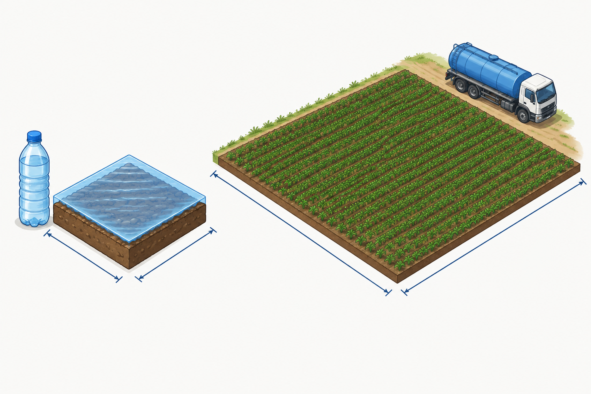
| Lámina | Por m² | Por hectárea |
|---|---|---|
| 1 mm | 1 L | 10 m³ |
| 5 mm | 5 L | 50 m³ |
| 7 mm | 7 L | 70 m³ (≈ 7 camiones) |
| 600 mm (temporada) | 600 L | 6 000 m³ |
Ventaja: la lluvia (pluviómetro), la ET (estación) y el agua del suelo (ADT, U2) se expresan en la misma unidad y se pueden sumar y restar.
Problema: Un huerto de paltos de 4 ha tiene una ET de 5.5 mm/día en febrero.
Resuelve en 4 minutos.
La evapotranspiración (ET) es la pérdida total de agua desde una superficie cultivada hacia la atmósfera:
\[ ET = E + T \]
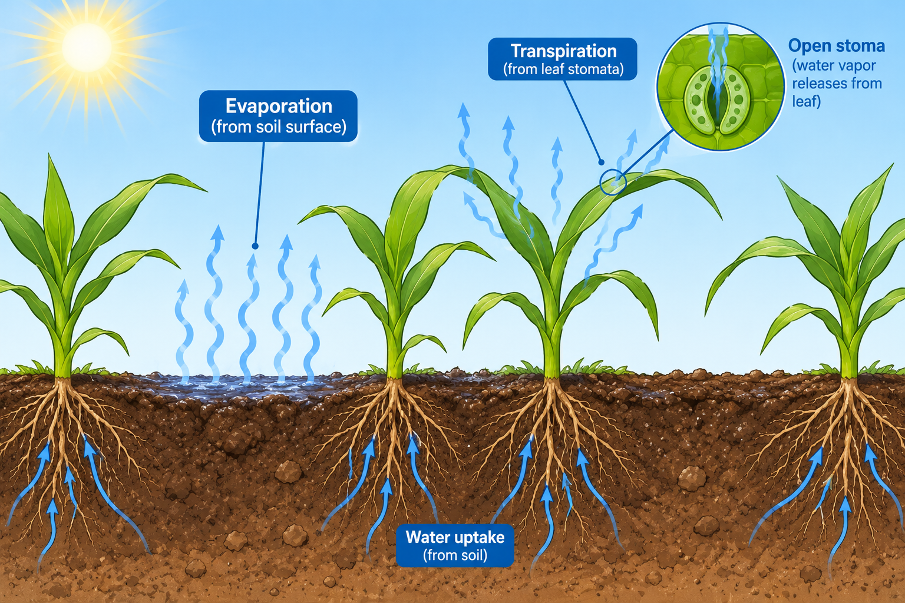
| ¿Desde dónde sale? | ¿Quién la controla? | |
|---|---|---|
| Evaporación (\(E\)) | Superficie del suelo y agua sobre las hojas | Humedad del suelo superficial, sombra |
| Transpiración (\(T\)) | Interior de la hoja, por los estomas | Planta (estomas, \(g_s\)) + atmósfera |
Se agrupan porque ocurren al mismo tiempo y es muy difícil medirlas por separado.
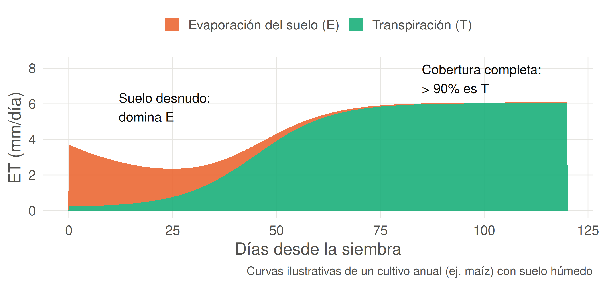
Al inicio, casi toda la ET es evaporación del suelo. Cuando el follaje cubre el suelo, la transpiración domina.
Para pasar agua líquida a vapor hay que romper los puentes de hidrógeno (U1). Esa energía es el calor latente de vaporización (\(\lambda\)):
\[ \lambda \approx 2.45 \text{ MJ/kg} \quad (\text{a } 20\,°\text{C}) \]
Como 1 mm de lámina = 1 kg de agua por m²:
\[ \text{Evaporar 1 mm} = 2.45 \text{ MJ/m}^2 \]
. . .
¿Cuánta energía llega? Un día despejado de enero en Santiago: \(R_s \approx 28\) MJ/m²/día.
\[ \frac{28}{2.45} \approx 11 \text{ mm/día} \quad \text{(máximo teórico si toda la energía evaporara agua)} \]
En la práctica la ET de enero es ~6-7 mm/día: parte de la energía se refleja o calienta el aire y el suelo.
| Grupo | Factores | Qué aportan |
|---|---|---|
| Clima | Radiación, temperatura, humedad del aire (DPV), viento | Energía y capacidad del aire para llevarse el vapor |
| Cultivo | Especie, altura, cobertura, etapa fenológica, control estomático | Superficie que transpira y su resistencia |
| Suelo y manejo | Humedad del suelo, salinidad, fertilidad, plagas, método de riego, mulch | Si hay agua disponible para responder a la demanda |
El clima fija la demanda; el cultivo y el suelo deciden cuánto de esa demanda se cumple.
La radiación solar es el factor más importante: sin energía no hay evaporación.
| Situación | \(R_s\) (MJ/m²/día) | ETo aprox. (mm/día) |
|---|---|---|
| Invierno nublado, zona central | 5-8 | 0.5-1.5 |
| Primavera despejada | 18-22 | 3-5 |
| Verano despejado | 26-30 | 6-8 |
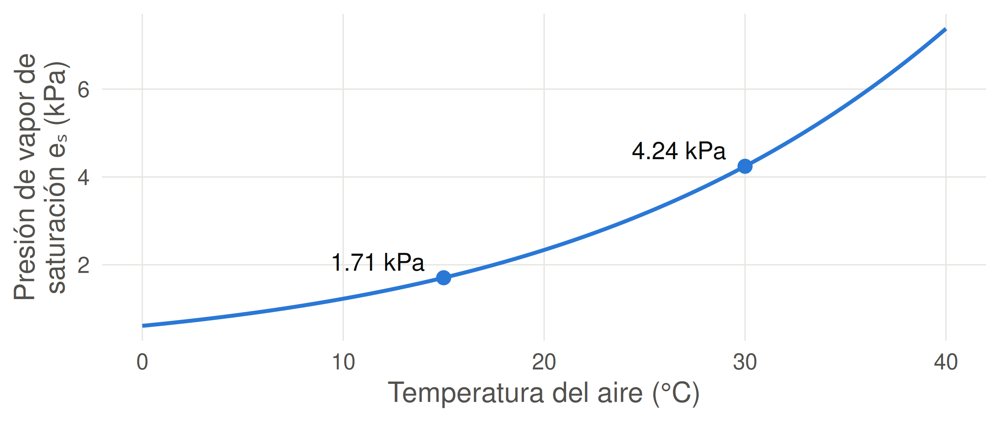
\[ DPV = e_s - e_a = e_s \left(1 - \frac{HR}{100}\right) \]
Al pasar de 15 °C a 30 °C, el aire puede contener más del doble de vapor. Con calor y baja humedad, el DPV se dispara y la ET aumenta.
Sobre el cultivo se forma una capa de aire húmedo. Si nadie la remueve, el aire se satura y la ET baja.
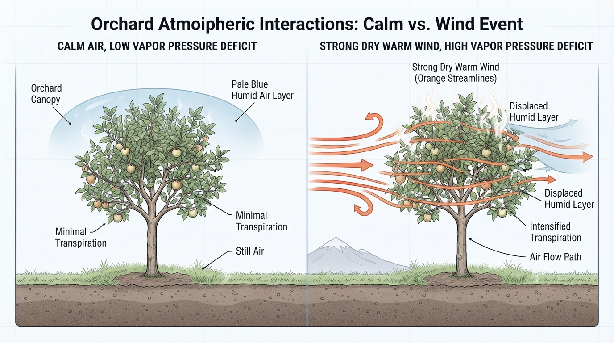
Ejemplo chileno: los vientos puelche y terral (secos y cálidos, bajan de la cordillera) pueden elevar la ET de un día de forma notable y causar estrés en cultivos que estaban bien regados.
Bajo el mismo clima, dos superficies pueden evapotranspirar muy distinto:
| Factor | Más ET | Menos ET |
|---|---|---|
| Cobertura | Follaje denso, cubre el suelo | Plantación joven, suelo desnudo seco |
| Altura y rugosidad | Cultivo alto (maíz, frutales) | Cultivo bajo y liso |
| Etapa fenológica | Floración, llenado | Establecimiento, senescencia |
| Estomas | Abiertos (\(g_s\) alta) | Cerrados por estrés o salinidad |
| Agua en el suelo | Sobre el umbral de riego | Bajo el umbral (estrés) |
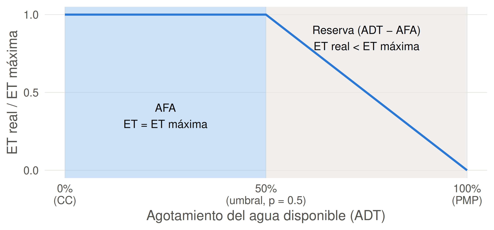
Mientras el cultivo consume la AFA (U2), transpira a tasa máxima. Al entrar en la reserva, cierra estomas (U3) y la ET real cae.
Mismo huerto de vid, bien regado, en plena temporada. Ordena los días de mayor a menor ET:
| Día | Cielo | T (°C) | HR (%) | Viento |
|---|---|---|---|---|
| A | Nublado | 18 | 80 | Calmo |
| B | Despejado | 30 | 30 | Calmo |
| C | Despejado | 30 | 30 | Puelche fuerte |
| D | Despejado | 22 | 75 | Brisa costera |
→ C > B > D > A. C y B tienen la misma energía y DPV, pero en C el viento seco remueve el vapor. D tiene energía pero aire húmedo. A tiene poca energía y aire casi saturado.
La energía que entra a la superficie de un cultivo se reparte en tres destinos:
\[ R_n = G + H + \lambda E \]
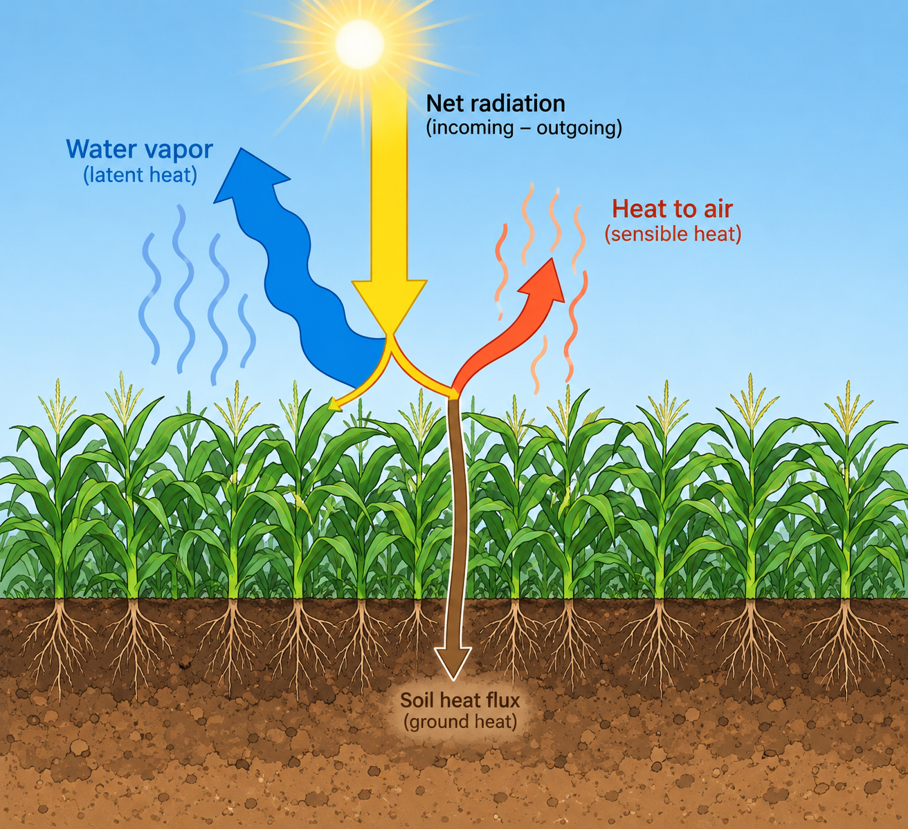
| Término | Nombre | ¿A dónde va la energía? |
|---|---|---|
| \(R_n\) | Radiación neta | Energía disponible (entra − sale) |
| \(G\) | Flujo de calor del suelo | Calienta el suelo |
| \(H\) | Calor sensible | Calienta el aire |
| \(\lambda E\) | Calor latente | Evapora agua (ET) |
Si conocemos \(R_n\), \(G\) y \(H\), la ET es “lo que sobra”: \(\lambda E = R_n - G - H\).
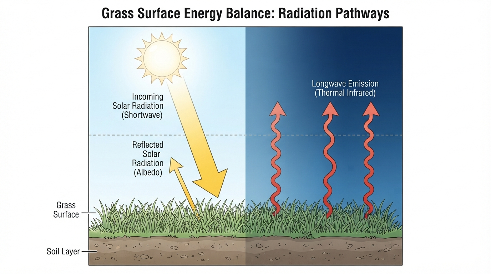
No toda la radiación solar (\(R_s\)) queda en la superficie:
\[ R_n = \underbrace{(1 - \alpha)\, R_s}_{R_{ns}\text{: onda corta absorbida}} - \underbrace{R_{nl}}_{\text{onda larga perdida}} \]
| Término | Significado | Valor típico |
|---|---|---|
| \(\alpha\) | Albedo: fracción de \(R_s\) reflejada | 0.23 (pasto de referencia) |
| \(R_{ns}\) | Onda corta absorbida | ~77% de \(R_s\) |
| \(R_{nl}\) | Pérdida neta de calor (onda larga) hacia el cielo | 3-8 MJ/m²/día |
Ejemplo (enero, Santiago): \(R_s = 28\) MJ/m²/día, \(R_{nl} = 5\) MJ/m²/día
\[ R_n = (1 - 0.23) \times 28 - 5 = 21.6 - 5 = 16.6 \text{ MJ/m}^2\text{/día} \]
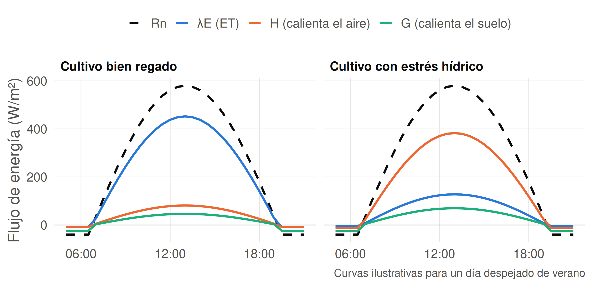
Con agua, la mayor parte de \(R_n\) se usa en evaporar (\(\lambda E\)). Con estrés, los estomas cierran y la energía calienta el aire (\(H\)): el cultivo se “calienta”.
La razón de Bowen (\(\beta\)) compara el calor que se va en calentar el aire con el que se va en evaporar:
\[ \beta = \frac{H}{\lambda E} \]
| Superficie | \(\beta\) aprox. | Interpretación |
|---|---|---|
| Cultivo bien regado, pradera verde | 0.1-0.3 | Casi toda la energía evapora agua |
| Pradera de secano en verano | 1-3 | Reparto similar o domina \(H\) |
| Desierto | > 5 | Casi no hay agua que evaporar |
| Oasis regado en zona árida | < 0 | \(H\) negativo: el aire caliente aporta energía extra |
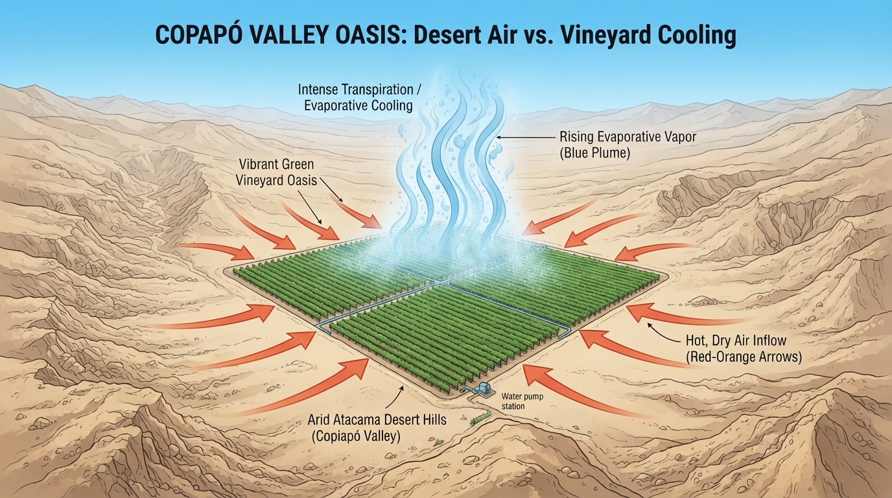
El aire caliente y seco del desierto entrega energía al huerto regado: \(H < 0\), \(\beta < 0\) y la ET supera lo que permitiría solo la radiación.
Problema: En un día de enero, sobre un cultivo de tomate bien regado, una estación de balance de energía registra:
Resuelve en 5 minutos.
Para comparar climas y cultivos necesitamos un punto de referencia:
| Término | ¿Qué es? | Sesión |
|---|---|---|
| ETo | ET de un pasto de referencia bien regado: solo depende del clima | 4.2 |
| ETc | ET de un cultivo específico sin restricciones: \(ET_c = K_c \times ET_o\) | 4.2 |
| ET real | ET que ocurre de verdad (puede ser menor por estrés, plagas, salinidad) | 4.2 / U5 |
ETo = demanda del clima · Kc = efecto del cultivo · ET real = lo que realmente pasa en el campo
Situación: Dos huertos de nogal, a 5 km de distancia, en el mismo día de enero (\(R_s\) = 28 MJ/m²/día):
Resuelve en 5 minutos.
| Término | Definición |
|---|---|
| Requerimiento hídrico | Agua que necesita el cultivo para compensar su ET sin restricción |
| Lámina de agua | Altura de agua sobre una superficie (1 mm = 1 L/m² = 10 m³/ha) |
| Evapotranspiración (ET) | Evaporación del suelo + transpiración del cultivo |
| Calor latente (\(\lambda\)) | Energía para evaporar el agua: 2.45 MJ/kg |
| Radiación neta (\(R_n\)) | Energía disponible en la superficie (entra − sale) |
| Albedo (\(\alpha\)) | Fracción de radiación solar reflejada (0.23 en pasto) |
| Calor sensible (\(H\)) | Energía que calienta el aire |
| Flujo de calor del suelo (\(G\)) | Energía que calienta el suelo |
| Razón de Bowen (\(\beta\)) | \(H / \lambda E\): indica si la superficie calienta o evapora |
El requerimiento hídrico es el agua que el cultivo pierde por ET; la necesidad de riego es lo que falta tras la lluvia y el suelo
ET = E + T: al inicio domina la evaporación del suelo; con cobertura completa, la transpiración
Trabajamos en mm: 1 mm = 1 L/m² = 10 m³/ha
Evaporar 1 mm cuesta 2.45 MJ/m²: la ET está limitada por la energía disponible
El clima fija la demanda (radiación, DPV, viento); el cultivo y el suelo deciden cuánto se cumple
Balance de energía: \(R_n = G + H + \lambda E\). Sin agua, la energía calienta el aire (\(H\)) en vez de evaporar
Sesión 4.2 — Evapotranspiración de referencia y de cultivo
→ ¿Cómo se calcula la ETo con datos de una estación meteorológica?
→ Método Penman-Monteith FAO-56 (completo) y Hargreaves-Samani (pocos datos).
→ Evapotranspiración de cultivo: \(ET_c = K_c \times ET_o\) y la curva de \(K_c\).
Para preparar: busca en redmeteo.cl la estación más cercana a tu casa y anota la temperatura máxima, mínima y humedad relativa de ayer.
¿Cuál es la diferencia entre requerimiento hídrico y necesidad de riego?
¿Qué componentes forman la ET y cómo cambia su importancia relativa durante la temporada de un cultivo anual?
Un cultivo tiene ET = 4.8 mm/día. ¿Cuántos litros pierde por m² y cuántos m³ por hectárea en una semana?
¿Por qué la ET de un cultivo regado en enero rara vez supera los 10-11 mm/día en la zona central?
Ordene de mayor a menor efecto sobre la ET: viento con aire húmedo, viento con aire seco, día nublado. Justifique.
Escriba el balance de energía de la superficie y explique qué le pasa a cada término cuando un cultivo sufre estrés hídrico.
Un huerto regado en el valle de Copiapó tiene \(\lambda E\) mayor que \(R_n\). ¿Cómo es posible? ¿Qué signo tiene \(H\)?
TAG2027 — Relación Suelo Agua Planta | UDLA